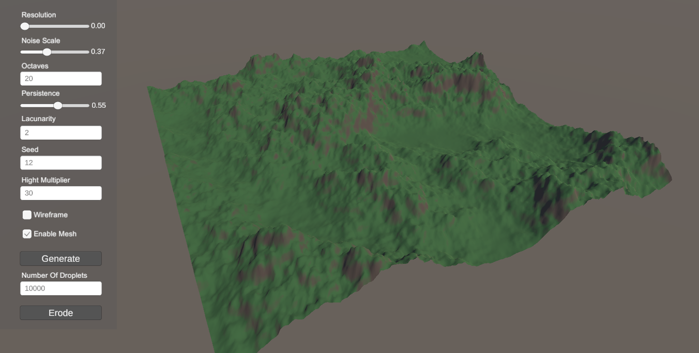
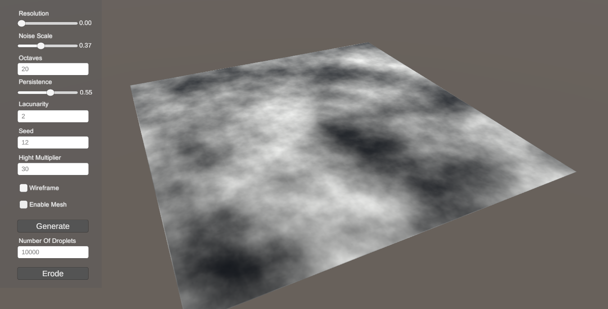
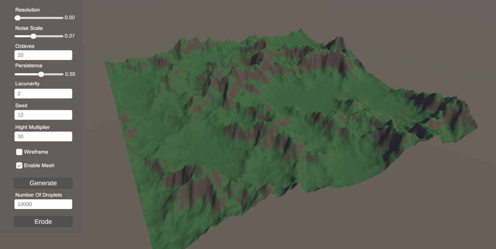
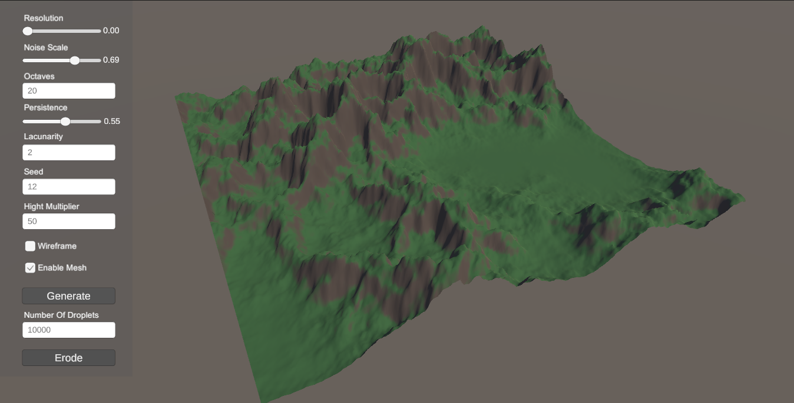
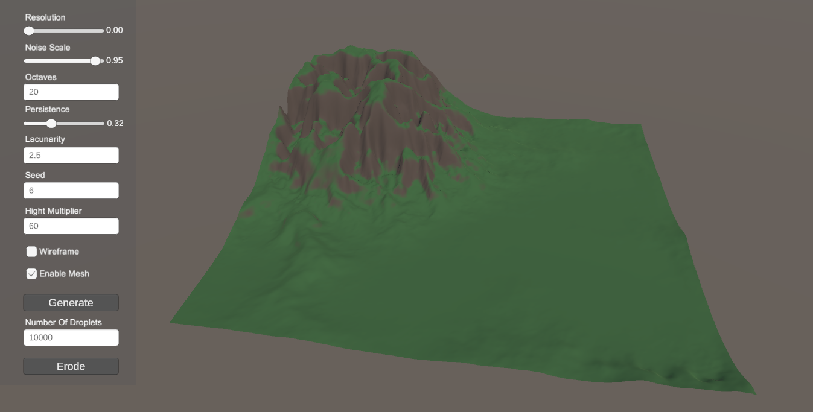
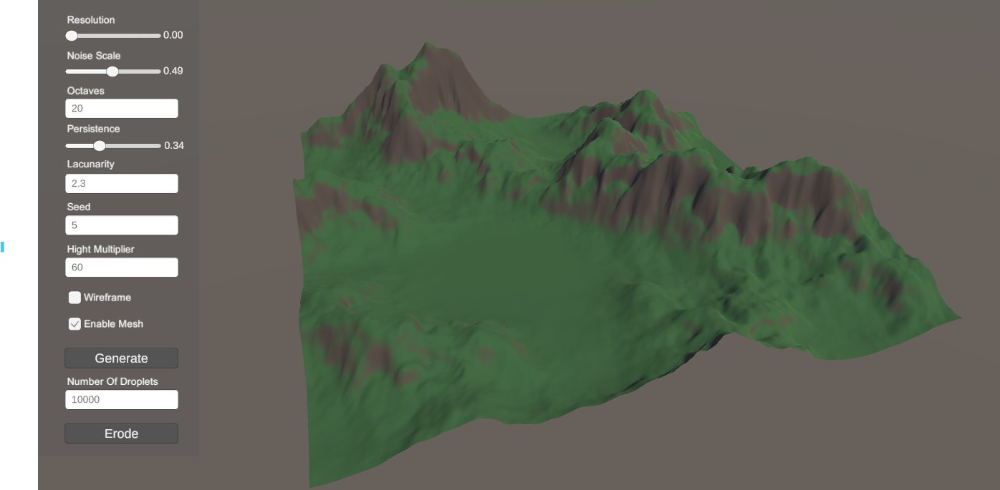
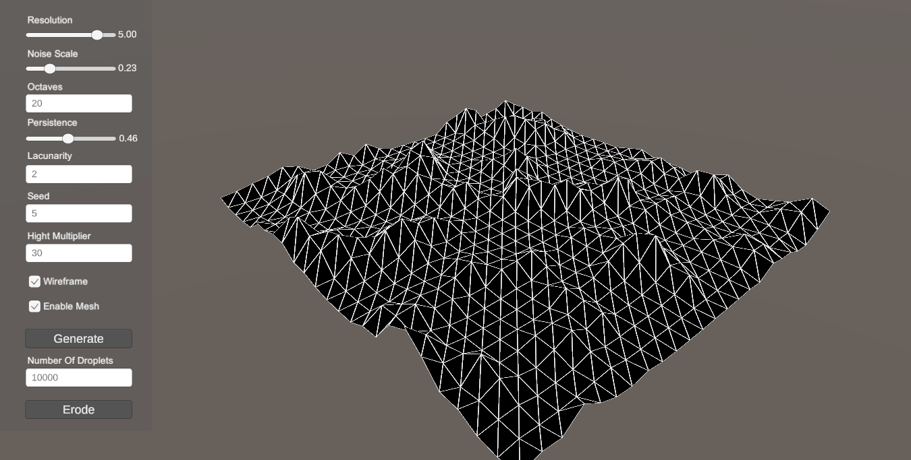
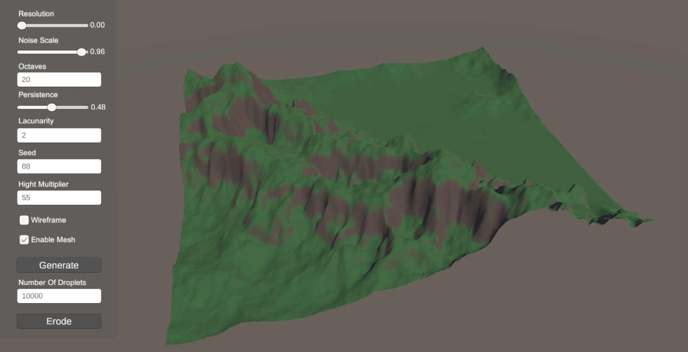

Procedural terrain generation using Perlin noise with fractal Brownian motion and hydraulic erosion
This is a terrain generation tool that allows users to create and modify a 3D mesh-based terrain. The tool allows users to generate a terrain mesh with customizable resolution and to modify them using Perlin noise. Additionally, it features a particle-based hydraulic erosion technique that simulates the effects of water flow.
Users can create a variety of diverse terrains by adjusting different parameters and applying erosion to the mesh thanks to the intuitive UI. This makes the tool ideal for quick experimentation and generation of random terrain.








Generate natural-looking terrain using multi-octave Perlin noise with adjustable scale, persistence, and lacunarity.
Simulate water erosion to create realistic terrain features like valleys and sediment deposits.
Adjust terrain parameters with a user-friendly interface like sliders, input fields, and visualization options.
The Perlin Noise function was implemented using a permutation-based noise function. It works by assigning random gradient vectors to grid points and interpolating values between them to create smooth variations. The random vectors are selected from a set of predefined constant vectors to determine the direction of gradients at each point, ensuring consistency in the noise pattern. To enhance the terrain’s realism and make it less smooth, fractal Brownian motion (FBM) was applied. This allowed the layering of multiple octaves of Perlin noise at different frequencies and amplitudes, allowing the terrain to look a bit more organic than simple random noise.
** 1. Initialize the coordinates (x, y) and wrap them to stay within a certain range (0-255). **
int X = Mathf.FloorToInt(x) & 255;
int Y = Mathf.FloorToInt(y) & 255;
** 2. Calculate the fractional part of x and y. **
float xf = x - Mathf.Floor(x);
float yf = y - Mathf.Floor(y);
** 3. Define vectors for the four surrounding grid points. **
Vector2 topRight = new Vector2(xf - 1.0f, yf - 1.0f);
Vector2 topLeft = new Vector2(xf, yf - 1.0f);
Vector2 bottomRight = new Vector2(xf - 1.0f, yf);
Vector2 bottomLeft = new Vector2(xf, yf);
** 4. Use the permutation table to look up gradient values for each grid point. **
int valueTopRight = permutationTable[permutationTable[X + 1] + Y + 1];
int valueTopLeft = permutationTable[permutationTable[X] + Y + 1];
int valueBottomRight = permutationTable[permutationTable[X + 1] + Y];
int valueBottomLeft = permutationTable[permutationTable[X] + Y];
** 5. Calculate dot products between gradient vectors and their relative positions. **
float dotTopRight = Vector2.Dot(topRight, GetConstantVector(valueTopRight));
float dotTopLeft = Vector2.Dot(topLeft, GetConstantVector(valueTopLeft));
float dotBottomRight = Vector2.Dot(bottomRight, GetConstantVector(valueBottomRight));
float dotBottomLeft = Vector2.Dot(bottomLeft, GetConstantVector(valueBottomLeft));
** 6. Interpolate the results using the fractional parts of x and y. **
float u = Fade(xf);
float v = Fade(yf);
return Lerp(u, Lerp(v, dotBottomLeft, dotTopLeft), Lerp(v, dotBottomRight, dotTopRight));
The hydraulic erosion algorithm was implemented using a particle-based simulation technique. The process starts by creating water droplets at random positions on the terrain. Each droplet follows the current height gradients and adjusts its direction and speed based on the terrain’s slope. As the droplet moves it either picks up or deposits sediment, modifying the terrain. The sediment capacity is dynamically adjusted based on speed and slope steepness, allowing a realistic simulation of erosion.
The erosion technique uses bilinear interpolation to distribute sediment across the terrain grid. When a droplet deposits sediment, the material is distributed among the surrounding grid points based on the droplet’s exact location. This prevents sharp or unnatural edges in the terrain. Additionally, erosion is applied using a weighted brush effect, ensuring that the elevation changes gradually rather than in abrupt cuts.
To refine the erosion effect more, parameters like inertia, friction and evaporation rate were added. Inertia determines how much a droplet resists changing direction, while friction and evaporation affect the droplet’s lifespan and ability to transport sediment.
** 1. Initialize a random water droplet position on the map. **
float posX = random.Next(0, width - 1);
float posY = random.Next(0, height - 1);
** 2. Set the initial droplet parameters (speed, water volume, etc.). **
float dirX = 0;
float dirY = 0;
float sediment = 0;
float speed = initialSpeed;
float water = initialWaterVolume;
** 3. Simulate the movement of the droplet over a specified lifetime. **
for (int lifetime = 0; lifetime < particleLifetime; lifetime++) {
// Calculate height and gradient at current droplet position
HeightAndGradient heightAndGradient = CalculateHeightAndGradient(posX, posY);
// Adjust direction based on the gradient (simulating water flow)
dirX = dirX * inertia - heightAndGradient.gradientX * (1 - inertia);
dirY = dirY * inertia - heightAndGradient.gradientY * (1 - inertia);
** 4. Normalize the direction vector to ensure consistent flow. **
float len = Mathf.Sqrt(dirX * dirX + dirY * dirY);
if (len != 0) {
dirX /= len;
dirY /= len;
}
posX += dirX;
posY += dirY;
** 5. Stop if the droplet moves outside the map boundaries. **
if (posX < 0 || posX >= width - 1 || posY < 0 || posY >= height - 1) {
break;
}
** 6. Calculate the new height difference (delta) as the droplet moves. **
float deltaHeight = newHeight - heightAndGradient.height;
** 7. Calculate the sediment capacity based on droplet speed and slope. **
float sedimentCapacity = Mathf.Max(minSedimentCapacity, sedimentCapacityFactor * speed * -deltaHeight);
** 8. If the droplet has more sediment than it can carry or moves uphill, deposit excess sediment.**
if (sediment > sedimentCapacity || deltaHeight > 0) {
float amountToDeposit = deltaHeight > 0 ? Mathf.Min(deltaHeight, sediment) : (sediment - sedimentCapacity) * depositSpeed;
/ Distribute sediment to surrounding grid points
map[coordX, coordY] += amountToDeposit * weightTL;
map[coordX + 1, coordY] += amountToDeposit * weightTR;
map[coordX, coordY + 1] += amountToDeposit * weightBL;
map[coordX + 1, coordY + 1] += amountToDeposit * weightBR;
}
** 9. If the droplet is carrying less sediment, erode the terrain.**
float amountToErode = Mathf.Min((sedimentCapacity - sediment) * erodeSpeed, -deltaHeight);
// Erode terrain by removing sediment from surrounding grid points
for (int brushPointIndex = 0; brushPointIndex < erosionBrushWeights.Length; brushPointIndex++) {
int nodeIndex = nodeY * width + nodeX + erosionBrushOffsets[brushPointIndex];
map[brushX, brushY] -= weighedErodeAmount;
sediment += deltaSediment;
}
** 10. Update droplet speed, water volume, and apply evaporation. **
speed = Mathf.Sqrt(speed * speed + deltaHeight * gravity);
speed = Mathf.Max(0, speed * (1 - friction));
water *= (1 - evaporateSpeed);